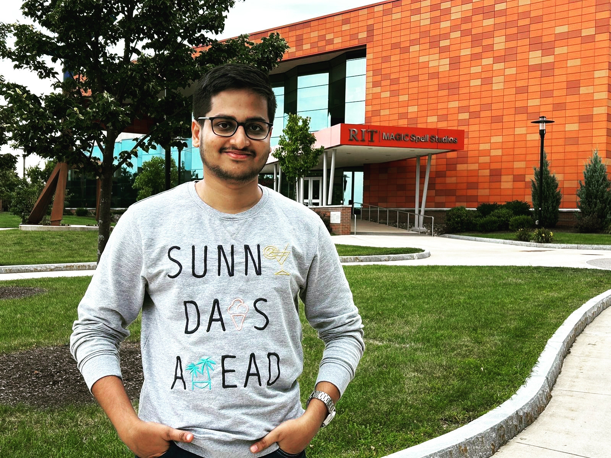

Hi, I'm Achyut
Data Scientist | AI Engineer | Tech Explorer
Obsessed with solving problems using data, I engineer AI-driven solutions that scale from cloud architecture to intelligent systems. I thrive at the intersection of machine learning, software engineering, and business impact, translating complexity into innovation that matters.